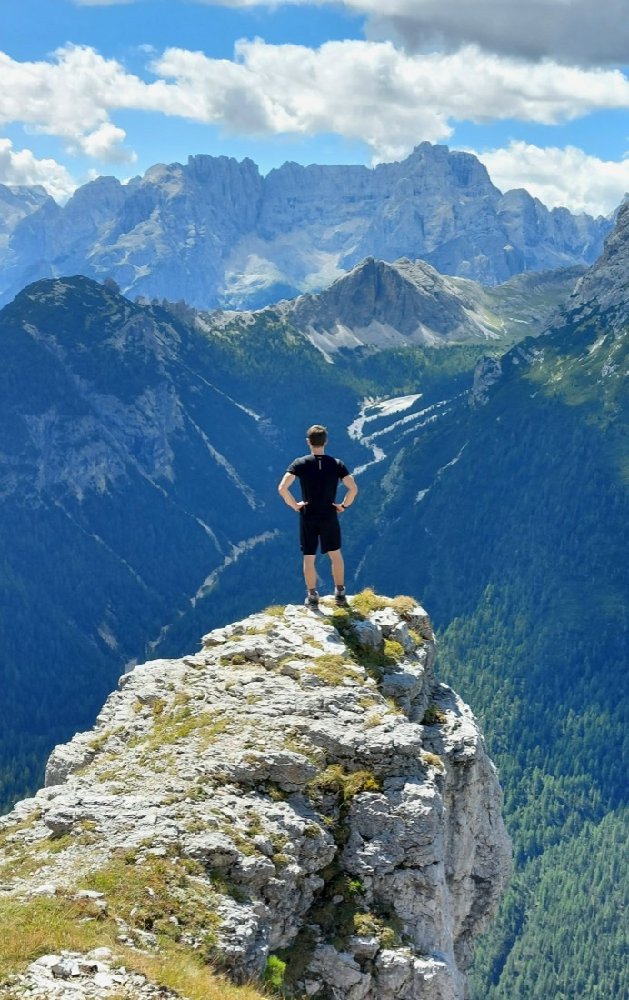

<div class="prose">
	<div class="about-grid">
		
		<div>
			<p>
				I grew up in Mira, a small town in northeastern Italy, nestled between Padova and Venezia.
				As a teenager, I was fortunate to have a variety of enriching experiences. Through activities like the
				Physics and Astronomy Olympiads and multiple research internships, I nurtured my passion for science
				beyond the classroom. My long-standing involvement with the Scout association and my role as a children's
				educator taught me the importance of service to others and instilled in me a strong sense of community.
			</p>
			<p>
				In 2016, I moved to Pisa to attend the <i>Scuola Normale Superiore</i> (<a href="https://www.sns.it/en">SNS</a>),
				a prestigious institution that admits a select group of students each year through a rigorous examination.
				At SNS, I studied Physics in conjunction with the <i>University of Pisa</i>, where I obtained both my
				Bachelor's and Master's degrees.
			</p>
			<p>
				During my studies, I had the opportunity to engage in various research experiences abroad, including a
				beautiful summer in Leiden (NL) as part of the <a href="https://leaps.strw.leidenuniv.nl/">LEAPS</a> program.
				In 2021, I decided to go back to Leiden to pursue my Ph.D., and discovered that the summers in the Netherlands
				can be deceptively sunny and mild… I spent a few happy years at <i>Leiden Observatory</i> and got my Ph.D. in
				November 2025. Shortly after, I began a new chapter of my career at the
				<i>Center for Astrophysics | Harvard &amp; Smithsonian</i>, as a NHFP Einstein Fellow.
			</p>
			<p>
				In my free time, I am passionate about sports — I regularly practice climbing, running, football, and swimming.
				I also love to travel and explore new places, but at least once every summer I need to spend a few days in the
				Dolomite mountains to recharge my energy (<i>see picture</i>).
			</p>
		</div>
	</div>
</div>
